Manipulación de elementos HTML
Modificación y obtenciónde elementos HTML
Se tratan de todos aquellos metodos utilizados para obtener elementos HTML y el texto de estos.
Para ejemplificar adecuedamente estos metodos los ejmeplos empleados partiran desde este codigo HTML
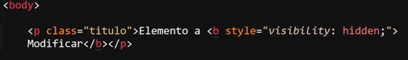
TextContent()
-
debuelve el texto de cualquier nodo, es decir este metodo retorna todo el texto contenido dentro de un elemento, incluyendo el que se enceuntre dentro de elementos hijos, sin tener en cuenta las etiquetas HTML ni tampoco a los estilos CSS de los elementos.
Ejemplo
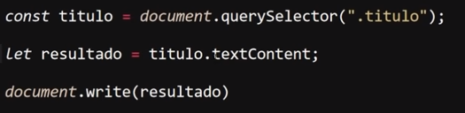
Resultado
En este ejemplo el elemento HTML en cuestion posee definido el atributo "style", con la propiedad "visibility" con un valor "hidden", lo que significa que el elemento tiene definido una propiedad CSS que oculata el elemento de la vista del usurio, sin embargo nada de esto es tomado en cuenta por el metodo "textContent", por lo que todo el texto del elemento es retornado por este, y posteriormente impreso en pantalla.
InnerText
-
Debuelve el texto visible de un cualquier "node element".
Este metodo esta en des-uso y no se recomienda emplearlo, sin embargo la importancia de conocerlo radica que es posible que se le encuentre en el codigo antiguo.
Ejemplo
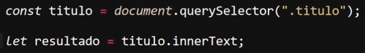
OuterText
-
Debuelve el texto de las etiquetas HTML (incluidas las etiquetas).
Este metodo esta en des-uso y no se recomienda emplearlo, sin embargo la importancia de conocerlo radica que es posible que se le encuentre en el codigo antiguo.
Ejemplo
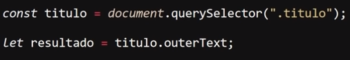
innerHTML
-
Este metodo permite retornar todo el contentido HTML, incluyendo las etiquetas de este.
Ejemplo
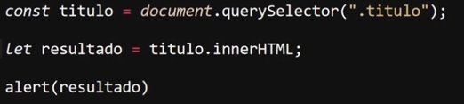
Resultado
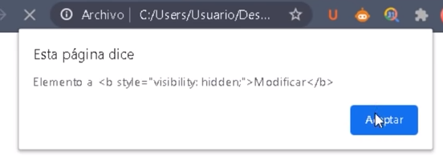
outerHTML
-
Este metodo permite retornar todo el elemento HTML, incluyendo las etiquetas y los atributos de estas.
Ejemplo
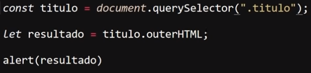
Resultado
Creación de elementos HTML
En esta sección se definen todos los metodos empleados para generar elementos HTML desde JavaScrip, para ejemplificarlos adecuadamete los ejemeplos se realizaran en base al siguiente codigo HTML:
CreateElement()
-
Este metodo permite generar un elemento HTML
Nota: Este metodo es sensible a las mayusculas, de hecho la forma en la que este reconoce a los elementos HTML que se le indiquen es con todos los ccaracteres en mayusculas.
Ejemplo
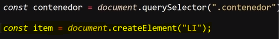
Resultado
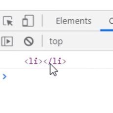
En este ejmeplo se muestra el elemento "li" genrado con la propiedad "createElement" en la consola.
CreateTextNode()
-
Este metodo permite generar un Objeto de texto de nodo, es dicir un texto HTML, pero que en cuanto a javaScript concierne este elemento es un objeto, por lo tanto estos elementos pueden axeder a las mismas propiedades que las de un objeto común.
Ejemplo
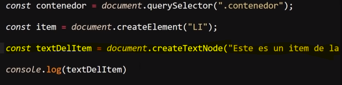
Resultado
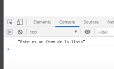
En este ejemplo se almacena un texto generado con el metodo "createTextNode" en una varible con el nombre "textDelItem", y luego se muestra el contenido de esta variable en la consola.
Introducir un Elemento Dentro de Otro
-
Para esto existen do formas las cuales varian segun el si el elemento hijo se trata de un texto u otro elemento HTML.
-
La forma de introducir un texto dentro de un elemento contendor es simple, se trata de utilizar las propiedades de obtencion de elementos para introducir el texto dentro de un elemento padre.
Ejmeplo
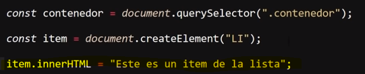
-
Para introducir cualquier otro tipo de texto HTML (incluyendo texto si se desea) se usa el metodo appendChild, el cual se espcaializa en definri un elemento como hijo de otro.
Intriducir Muchos Elementos dentro de un Elemento Padre
-
Generar e introducir elementos hijos con javaScript aunque no lo paresca es un proceso que consume una cantidad de recursos considerable, y esto se agraba en aquellas ocaciones en las que sea necesario definir muchos de estos, ya que para estos casos la mejor estructura es un siclo "for", sin embargo al definir grandes cantidades de elementos se genera un consumo que puede llegar a ser exesivo de recursos.
Para estos casos se desarrollo el metodo "createDocumentFragment" el cual soluciona estos problemas de recursos, ya que gestion la forma en la los navegadores imprimen los elementos en pantalla, y lo optimisa para las ocaciones en las que sea necesario imprimir una gran cantidad de elementos.
Ejemplo
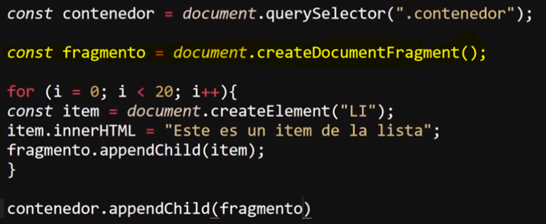
Resultado
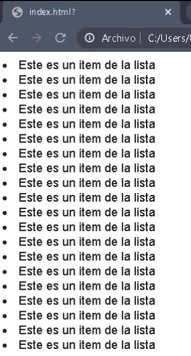
En este ejmeplo a un elemento padre llamdo "contenedor" se le desea añadir una lista de 20 elementos hijos, dentro del siclo "for" se define los elementos que seran añadidos, pero estos son almacenados en una varible particular llamada "fragmento" lo que hace distintiva a esta varible es que anteriormente se le aplico el metodo "createDocumentFragment", lo que permite que esta variable este optimizada para imprimir multiples elementos en patalla, de ese modo cada vez que el siclo "for" realise un recorrido la varible permitira manipular estos elemetos sin generar un consumo exesivo de recursos.
Obtención y Manipulación de Elementos Childs (Hijos)
Se tratan de todas las propiedades que se aplican para manipular elementos hijos, para ejemplificarlas adecuadamete los ejemeplos de estas propiedades se basaran en este codigo HTML:
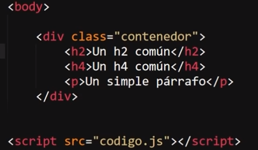
Nota: En JavaScript, un nodo se refiere a una entidad dentro del árbol del DOM (Document Object Model), que representa un elemento o parte de la estructura de una página web.
FirstChild
-
Esta propiedad permite el retornar el primer valor almacenado dentro de un contenedor, en esta prpiedad es necesario hacer incapie en "valor", ya que lo que esta propiedad retorna no es el pirmer elemento, si no en su lugar retorna el primer nodo que se encuentre dentro del contendor, el cual la mayoria de las veces se trata de un nodo de tipo texto.
Ejemplo
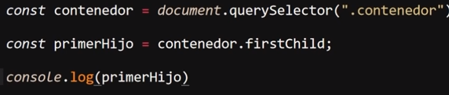
Resultado
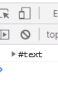
En este ejemeplo se aplica la propiedad "firstChild" al elemento contendor, lo cual retorna un nodo de tipo texto en consola.
Esto ocurre ya que los espacios y los saltos de linea son cosiderados como caracteres de texto, por ello al aplicarlos en el codigo del documento para mantener la semantica estos son los primeros valores encontrados por la propiedad, he allí la razon de que sean retornados:
Ejemplo
Para lograr que esta propiedad retorne elementos HTML es necesario definir las etiquetas del primer elemento dentro de las etiquetas del elemento contenedor sin ningun salto de linea o espacio que separe las etiquetas del elemento hijo del elemento padre.
Ejemplo
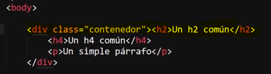
Resultado
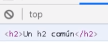
LastChild
-
Esta propiedad es exactamete igual a la anterior con la unica diferencia de que esta retorna el ultimo valor, no el primero, por todo lo demas es igual, incluyendo el hecho de retornar el nodo de texto xorresponiente a los saltos de linea o espacios, ya que son lo ultimos nodos contenidos por el elemento padre, por lo tanto para que esta propiedad retorne elementos HTML es necesario cerrar las etquetas del elemento hijo justo antes de las del elemento padre, de ese modo los ultimos nodos coresponderan al elemento hijo.
Codigo JavaScrip
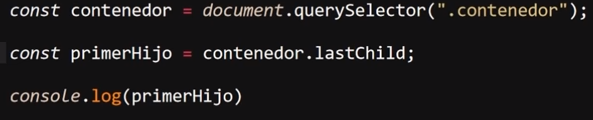
Ejemplo con Semantica
Resultado
Ejemplo Etiquetas Pegadas
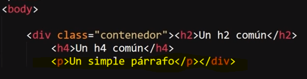
Resultado
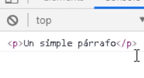
FirstElementChild
-
Esta propiedad retorna el primer elemento almacenado dentro del elemento padre, por lo tanto diferencia de "firstChild" esta propiedad ignora por completo los nodos de espacios y saltos de linea, por lo tanto unicamte retorna el primer elemento dentro del contendor.
HTML
JavaScrip
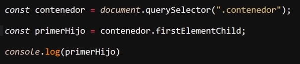
Resultado
LastElementChild
-
Esta propiedad es exactamete igual a la anterior con la unica diferencia de que esta retorna el ultimo elemento, no el primero.
HTML
JavaScrip
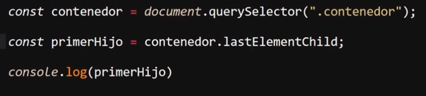
Resultado
ChildNodes
-
Esta propiedad retorna todos los nodos almacenados dentro del elemento padre, y lo hace en un elemento de tipo "NodeList" (se recorre como un array con la propiedad "forEach", pero no puede usar las propiedades de estos, ya que e un objeto), por lo tanto esta propiedad permite retornar todos los nodos sin importar si se trata de nodoso de etiquetas o de semantica.
Ejemplo
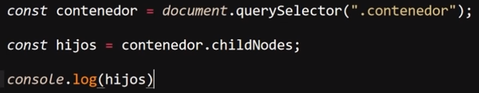
Resultado
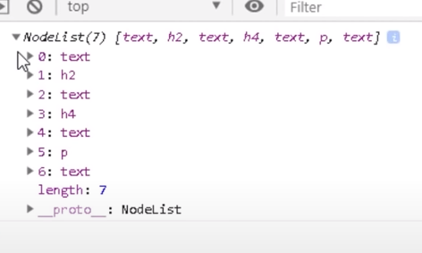
Childen
-
Esta propiedad es muy similar a la anterior, sn embargo se diferencia en que esta unicamete retorna los nodos que pertenezcan elementos HTML, por lo tanto esta propiedad retorna un listado de todos los elementos hijos de un elemento padre, y lo hace en formato "HTMLColecction"(se puede recorrer con un bucle "for of" ya que de otra forma no se puede recorrer).
Ejemplo
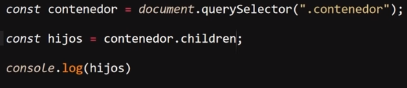
Resultado
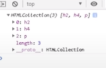
Metodos de Childs
appendChild()
-
Este metodo permite definir que un elemento sera el hijo de otro, por lo tanto se podria decir que este metodo permite introducir un elemento HTML dentro de otro.
Para hecarlo este metodo debe aplicarse a la varible que almacena al elemento "padre", a su vez este metodo recibe un valor, el cual corresponde a la varible que almacena al elemento "hijo".
Ejemplo
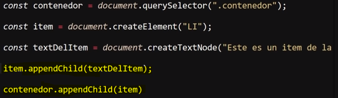
Resultado
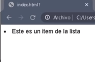
En este ejemplo El codigo HTML unicamete posee un elemento contendor "div", se usa el metodo "createElement" para generar un contendor de tipo "li", y el metodo "createTextNode" para generar un objeto de texto. Ya con esto se utiliza el metodo "appendChild" dos veces, la primera vez para convertir el elemento de texto en un elemento hijo del contendor "li", y una segunda para convertir el elemento "li" en el elemento hijo del contendor "div", de ese modo se empleo JavaScrip para generar dos elementos hijos y introducirlos en una elemento padre.
ReplaceChild()
-
Este metodo permite remplazar un elemento HTML por otro, para hacerlo esta propiedad recibe dos valores separados entre sí por una coma (,), de los cuales el primero corresponde al nombre de la varible que esta vinculada al elemento a remplazar y el segundo dato corresponde al nombre de la varible que esta vinculada al nuevo elemento.
HTML
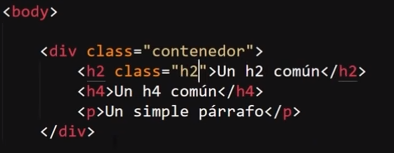
JavaScrip
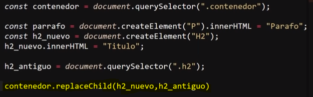
Resultado
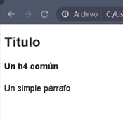
En este ejemeplo se selecciona el elemento padre atravez de su clase, luego se crean dos elementos usando JavaScrip un parrafo(no se usa) y un h2, a este ultimo se le define el valor "Titulo", luego se selecciona el h2 a remplazar en una varible llamada "h2_antiguo" atravez de su clase llamada "h2", por ultimo se emplea el metodo "replaceChild" para remplazar el "h2" antiguo por el nuevo.
Nota: Recordar que JavaScrip para manipular elementos HTML es necesario vincularlos a una variable.
RemoveChild()
-
Este metodo permite remover un elemento HTML, su funcionamiento es muy simple, tansolo hay que aplicar este metodo al alemento padre, indicando la varible vinculada al respectivo elemento a remover dentro de los parentesis del metodo.
HTML
JavaScrip
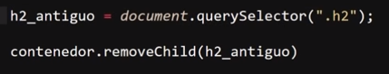
Resultado
HasChildNodes()
-
Este metodo permite comprobar el si un elemento HTML posee o no elementos hijos, por lo cual este metodo tan solo retorna valores booleanos, "True" en caso de que el elemento padre si los posea y "false" en caso de que no tenga ninguno.
HTML
JavaScrip
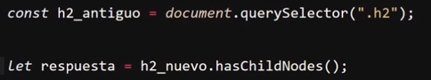
En este ejemplo se selecciona un elemento "h2" atravez de su clase, y luego se le aplica el metodo para comprobar si posee o no elementos hijos a la vez que se guarda el retorno del metodo en una varible llamada "respuesta", en este caso pese a lo que puede aparentar el resultado retorna en "true", ya que el texto que esta contenido dentro del elemento "h2" se trata de elementos de texto, por lo tanto el texto dentro del "h2" se trata de elementos hijos.
Propiedades de los Elementos Padres
ParentElement y el ParentNode
-
Se tratan de dos propiedades casi completamente aguales con la unica diferencia de que "parentElement" retorna el elemento HTML padre, mientras que "parentNode" retorna el nodo padre del elemento actual, es decir la difrencia entre los dos es que una retorna el elemento y otro el nodo.
En la gran mayora de los casos el efecto de ambos es el mismo, solo en ocaciones muy particulaes en las que el elemento hijo este contenido por un nodo que no pertenezca a un elemento HTML el resultado puede variar, de resto ambas propiedades suelen arrojar el mismo resultado.
ParentElement
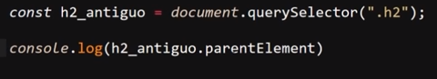
Resultado
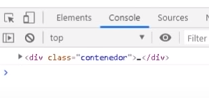
ParentNode
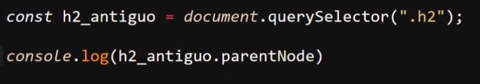
Resultado
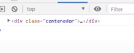
Como se puede ver en el ejemeplo efectivamente el resultad de ambas propiedades es el mismo, solo en ocaciones muy espesificas estas propiedades retornaran resultados difernetes.
Elementos Hermanos
Los elementos hermanos se tratan de todos aquellos elementos que esten en el mismo nivel de estructura, por ejemplo en el caso de dos alementos "p" contenidos dentro de un elemento "article" los dos elementos "p" se consideran elementos hermanos.
Acontinuación se definen las diferentes propiedades deseñadas para manipularlos, para ejemplificar adecuadamete estas propiedades todos los ejemplos de estas partiran del siguiente codigo HTML:
NextSibling y PreviousSibling
-
Estas dos propiedades retornan el nodo hermano más sercano al elemento, "nextSibling" retorna el siguiente nodo al elemento, por su parte "previousSibling" retorna el nodo anterior al elemento, por lo tanto estas propiedades retornan el nodo anterior y siguiente del elemento.
En la mayoria de los casos ambos retornos seran una lista de nodos de tipo texto, ya que en la mayoria de los casos el codigo al estar indentado, los nodos que se enceuntran antes y despues de los elementos son nodos de texto, ya que estos pertenecen a los espacios y saltos de linea usados para identar el codigo.
Para que estas propiedades retornen otro elemento HTML es necesario que las etiquetas de estos no esten separadas por ningun espacio o salto de linea, es decir se encuentren completamete pegadas a las del elemento hermano.
NextSibling
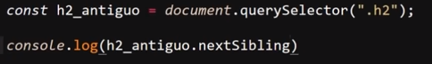
Resultado
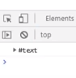
PreviousSibling
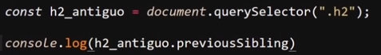
Resultado
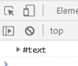
NextElementSibling y PreviousElementSibling
-
Estas propiedades permiten retornar los elementos HTML hermanos más cercanos del elemento actual,"NextElementSibling" retorna el elemento siguiente del actual, mientras que "PreviousElementSibling" retorna el elemento anterior al actual, por lo tanto estas propiedades permiten retornar el elemento anterior y el siguiente al elemento actual.
NextElementSibling
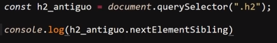
Resultado
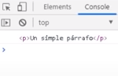
PreviousElementSibling
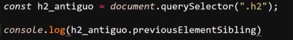
Resultado
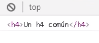
Closest
-
La propiedad se utiliza para encontrar el ancestro más cercano de un elemento en el árbol del DOM que coincida con un selector CSS específico. Si no se encuentra ningún elemento que coincida con el selector, closest devuelve null, es decir esta propiedad permite retornar el elemento contenedor más cercano en base a una clase definida.
Ejemplo
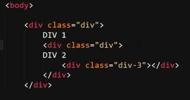
Resultado
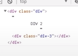